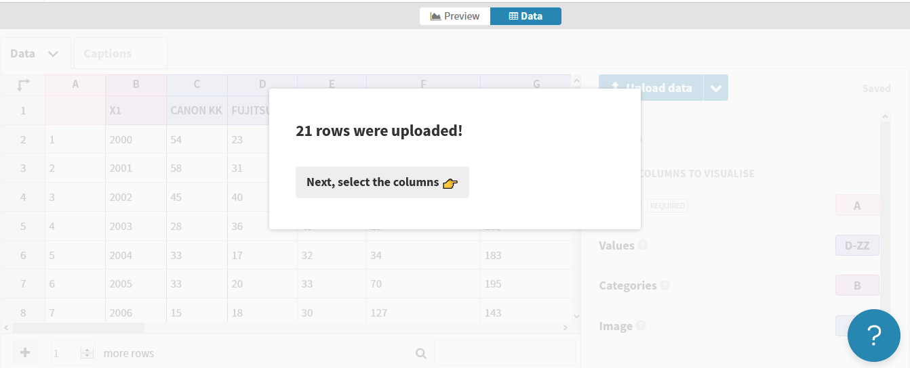

Chapter 15 Flourish
15.1 Introduction
Flourish is a visualization platform and tool allowing to easily turn our data into maps, charts and interactive stories.
Flourish is somehow similar to Tableau in terms that it makes it very easy to try different visualizations based on the same clean data input by just dragging column variables to axes, assigning features and parameters to characterise them, and selecting the output chart types that best fit. We can save the visualizations we create as images and also as HTML; but this tool also allows us to create stories, that is, animated sequences of visualizations were it is also possible to insert slides with images, text paragraphs, etc.
15.2 Creating animated bar charts with Flourish
Imagine that we want to represent top patent applicants throughout the years. We could make an animated chart to see how these ranks evolve. Let’s do it.
What we do is go strait away to the template we want to use in Flourish (in this case this bar chart race template) and select create visualization to create a new one based on this.

To use Flourish it is necessary to register and create an account. The free version includes some restrictions, such as the option to publish privately, but most of the features for creating visualizations are available.
15.2.1 Preparing our data
First thing we need to do is accommodate our data so there is a row for each applicant we want to represent. Data should look like this:

The first column should contain the name of each applicant and then all subsequent columns should represent the time periods (those will be years in our case). The data inside each cell will be the number of published patents by an applicant that year.
15.2.1.1 Obtaining patent data
We have done a search in EPO’s Patstat and Global Patent Index (GPI) service. We looked for patents on home heath care. We obtained csv files containing stats regarding number of patents by year for top applicants during the last 20 years.
Let’s read it:
library(tidyverse) # we load tidyverse package for data manipulation
applicants_years <- read_delim("data/epo_gpi_home_health_care_applicant_years.csv", ";", skip = 12) #we skip first 12 rows we do not want
applicants_yearsFALSE # A tibble: 20 x 19
FALSE X1 `CANON KK` `FUJITSU LTD` `HITACHI LTD` `HUAWEI TECH CO~
FALSE <dbl> <dbl> <dbl> <dbl> <dbl>
FALSE 1 2000 54 23 48 2
FALSE 2 2001 58 31 75 1
FALSE 3 2002 45 40 56 10
FALSE 4 2003 28 36 49 13
FALSE 5 2004 33 17 32 34
FALSE 6 2005 33 20 33 70
FALSE 7 2006 15 18 30 127
FALSE 8 2007 18 25 23 134
FALSE 9 2008 19 26 31 115
FALSE 10 2009 22 16 26 123
FALSE 11 2010 11 7 17 54
FALSE 12 2011 8 8 14 68
FALSE 13 2012 5 7 15 57
FALSE 14 2013 14 3 7 43
FALSE 15 2014 16 12 1 42
FALSE 16 2015 12 8 4 36
FALSE 17 2016 4 10 4 21
FALSE 18 2017 10 9 NA 28
FALSE 19 2018 13 2 2 28
FALSE 20 2019 9 1 2 47
FALSE # ... with 14 more variables: `LG ELECTRONICS INC` <dbl>, `MATSUSHITA ELECTRIC
FALSE # IND CO LTD` <dbl>, `MATSUSHITA ELECTRIC WORKS LTD` <dbl>, `MITSUBISHI
FALSE # ELECTRIC CORP` <dbl>, `NEC CORP` <dbl>, `RICOH KK` <dbl>, `SAMSUNG
FALSE # ELECTRONICS CO LTD` <dbl>, `SANYO ELECTRIC CO` <dbl>, `SEKISUI CHEMICAL CO
FALSE # LTD` <dbl>, `SEKISUI HOUSE KK` <dbl>, `SHARP KK` <dbl>, `SONY CORP` <dbl>,
FALSE # `TOSHIBA CORP` <dbl>, `ZTE CORP` <dbl>We realize that this data comes in a different format: we have year in rows and applicant names in columns; therefore we need to transpose this data to have it in the desired format, that is: applicants as rows and years as columns.
We can do that for example in R by using the rownames_to_column and pivot functions
applicants_years_to_flourish <- applicants_years %>%
rownames_to_column() %>% #first step is converting rownames to a column so we have a reference we can lean on
pivot_longer(-rowname, 'variable', "value") %>% #next we put all our data in a long dataframe with a column with all variables and a column with all corresponding values
pivot_wider(variable, rowname) #finally we transpose taking all new rownames as columns (wide format)
applicants_years_to_flourishFALSE # A tibble: 19 x 21
FALSE variable `1` `2` `3` `4` `5` `6` `7` `8` `9` `10` `11`
FALSE <chr> <dbl> <dbl> <dbl> <dbl> <dbl> <dbl> <dbl> <dbl> <dbl> <dbl> <dbl>
FALSE 1 X1 2000 2001 2002 2003 2004 2005 2006 2007 2008 2009 2010
FALSE 2 CANON KK 54 58 45 28 33 33 15 18 19 22 11
FALSE 3 FUJITSU~ 23 31 40 36 17 20 18 25 26 16 7
FALSE 4 HITACHI~ 48 75 56 49 32 33 30 23 31 26 17
FALSE 5 HUAWEI ~ 2 1 10 13 34 70 127 134 115 123 54
FALSE 6 LG ELEC~ 103 146 198 203 183 195 143 56 69 78 135
FALSE 7 MATSUSH~ 138 184 155 161 181 168 134 40 9 NA NA
FALSE 8 MATSUSH~ 82 66 63 45 50 79 79 41 4 NA NA
FALSE 9 MITSUBI~ 50 51 41 18 29 33 23 22 28 25 24
FALSE 10 NEC CORP 90 79 41 25 39 29 20 33 22 38 17
FALSE 11 RICOH KK 24 38 22 27 31 18 16 15 20 1 1
FALSE 12 SAMSUNG~ 55 57 58 114 88 156 191 129 83 99 60
FALSE 13 SANYO E~ 54 65 46 26 51 30 18 14 13 14 7
FALSE 14 SEKISUI~ 61 36 39 40 28 17 10 8 3 8 10
FALSE 15 SEKISUI~ 169 128 51 26 25 21 21 14 25 4 4
FALSE 16 SHARP KK 47 41 29 35 30 37 25 29 19 29 43
FALSE 17 SONY CO~ 68 70 50 68 51 30 37 41 37 30 24
FALSE 18 TOSHIBA~ 65 57 55 57 36 41 34 35 21 14 19
FALSE 19 ZTE CORP NA NA NA 2 6 7 38 96 130 186 220
FALSE # ... with 9 more variables: `12` <dbl>, `13` <dbl>, `14` <dbl>, `15` <dbl>,
FALSE # `16` <dbl>, `17` <dbl>, `18` <dbl>, `19` <dbl>, `20` <dbl>15.2.1.2 Uptoading our data into Flourish
Our patent data finally looks ready. It has the format that Flourish will accept to create our barchart race visualization, so we can now save this data into a CSV file to load it into Flourish.
We will go to the Flourish template for creating bar chart races in Flourish and though the available upload data button we will upload our own CSV data into Flourish. Flourish will quickly recognize our data.

We have to make sure that we add all columns containing values that are relevant to our bar chart race visualization to the “Values” setting. We can still change and adjust some data such as column names or removing columns in case there is some bits of data that we do not want, etc. For example, we just edit and name Applicant the column containing all applicant names.

Our data imported well so now just by going into the Preview tab, we should be able to see it in action.
15.2.2 Preview, tweeking and publihing
The preview of our chart will appear to the left hand side of the screen. In the right we have full control of all parameters to tweak the styles of this visualization (labels, sizes, animation time, etc.).
All changes we do are saved automatically and our animation updates. It will appear published in our public account (this is the default setup option) or we can share it, make it private or embed it anywhere, given that we have associated privileges (upgraded account options).